Echo State Networks for Text Classification
Model
An echo state network (ESN) is a recurrent neural network composed of 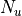 input units, hidden units composing the so-called reservoir, and 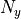 output units. The input units project onto the reservoir , which is itself recurrently connected , and projects onto the output units .

Here, we consider Leaky Integrator ESNs. The inputs, reservoir state and outputs of the network at time are denoted by 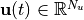, and 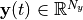, respectively. The state 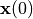 is the initial state. The dynamics of the network is then given by the following equations:
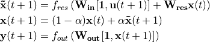
where ![[\mathbf{a}, \mathbf{b}]](_images/math/09789a8347f3f82806268d0c25af0318b8c78982.png) denotes the concatenation of
and , is the
initial state, and are the activation
functions of the reservoir and output cells (applied component-wise),
and
denotes the concatenation of
and , is the
initial state, and are the activation
functions of the reservoir and output cells (applied component-wise),
and  is the leaking rate ().
is the leaking rate ().
The leaking rate controls the update speed of the reservoir dynamics.
The input weights are initialized randomly from
a uniform distribution 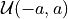, where  is the
input scaling, and kept fixed during the whole training process. The
input scaling determines the extent of nonlinearity of the reservoir
response. The reservoir weights are drawn from
the uniform or Gaussian distribution, then randomly set to
with a given sparsity rate, and finally rescaled in order to have a
specific spectral radius (usually, we choose
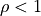). The reservoir weights are
also kept fixed during training. Only the output
are trainable.
is the
input scaling, and kept fixed during the whole training process. The
input scaling determines the extent of nonlinearity of the reservoir
response. The reservoir weights are drawn from
the uniform or Gaussian distribution, then randomly set to
with a given sparsity rate, and finally rescaled in order to have a
specific spectral radius (usually, we choose
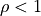). The reservoir weights are
also kept fixed during training. Only the output
are trainable.
Training
In an ESN, only the output weights are trained. The training process can be described as follows. Consider some training set composed of temporal inputs and associated targets, i.e.,
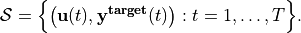
Let 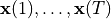 and 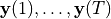 be the successive reservoir states and predictions obtained when running the ENS on inputs 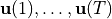, respectively. Then, the output weights are computed by minimizing some cost function of the predictions and targets via any desired learning algorithm – e.g., a simple Ridge regression. Usually, some initial transient of the ESN dynamics is used as a warm-up of the reservoir, and is computed on the basis of the remaining suffix of collected states, predictions and and targets.
Classical temporal tasks involve time series where each point is associated with a corresponding target. By contrast, in the present case, the task comprises multiple time series as inputs – the successive embedded texts – each of which being associated with only one output target – its corresponding class. We propose a customized training process targeted at this many-to-one paradigm.
- Our training paradigm consist of the four following steps:
Embed the successive texts (FastTest, GloVe, etc.);
Pass the embedded texts into the ESN;
Merge the reservoir states associated to the successive texts (last, mean, etc.);
Learn the association between the merged states and associated targets.
The training process is illustrated in the figure below.